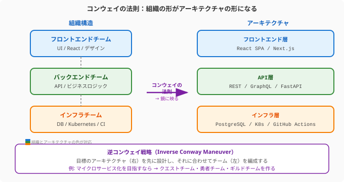

「なぜQuestForgeの通知サービスとユーザーサービスのAPIはこんなにも密結合なんだろう？」——コードベースを読み解いていると、こんな疑問が湧くことがあります。
その答えは、多くの場合、コードの外にあります。組織の構造の中に。
メルビン・コンウェイが1968年に発見したこの法則は、半世紀を経た今も、ソフトウェアアーキテクチャを理解する最も重要な洞察の一つです。
「システムを設計する組織は、その組織のコミュニケーション構造を模倣した設計を生み出す。」 — Melvin Conway（1968）
言葉だけでは掴みにくいので、QuestForgeで考えてみましょう。
QuestForgeの開発チームが「フロントエンドチーム」「バックエンドチーム」「インフラチーム」という3つのチームに分かれているとします。すると自然に、アーキテクチャも「フロントエンド」「バックエンドAPI」「インフラ基盤」の3層に分かれた設計になります。
次の図は、チーム構造とシステムアーキテクチャが鏡のように対応するコンウェイの法則の本質を示しています。

なぜそうなるか？ それは、チームの境界がコミュニケーションの境界を生み出すからです。同じチームのメンバーは頻繁に対話し、密に統合された設計を生み出します。チームをまたぐ接点には、明示的なインターフェース（API仕様書、契約）が必要になります。
これは悪いことではありません——意識的に活用すれば、強力な設計ツールになります。
この認識から生まれた設計アプローチが逆コンウェイ戦略（Inverse Conway Maneuver）です。
「目標とするアーキテクチャに合わせてチームを設計する。」
マイクロサービス化を目指すなら、まずアーキテクチャを描き、それに合わせてチームを分割する。チームの境界がサービスの境界になるよう意図的に設計するのです。
QuestForgeでは、「クエスト機能」「勇者プロファイル」「ギルド管理」「通知」という4つのドメインに沿ってチームを編成することで、それぞれが独立してデプロイできるサービスアーキテクチャを自然に実現できます。
Matthew Skelton と Manuel Pais が体系化したチームトポロジー（Team Topologies）は、現代のソフトウェア開発における最も実践的なチーム設計の枠組みです。
| タイプ | 役割 | QuestForgeでの例 |
|---|---|---|
| ストリームアラインドチーム | 特定のビジネスドメインに継続的に価値を届ける主役 | クエストチーム、勇者チーム |
| プラットフォームチーム | 他チームの自律性を高めるセルフサービス基盤を提供 | インフラ・CI/CDチーム |
| イネーブリングチーム | 専門知識を伝播してストリームアラインドチームの能力を高める | セキュリティ専門チーム |
| コンプリケイテッドサブシステムチーム | 専門的な複雑さを持つ独立した領域を担う | 課金・決済チーム |
ストリームアラインドチームが中心です。QuestForgeの「クエストチーム」は、クエストの作成・管理・完了に関わるAPIからフロントエンドまでを一貫して担います。外部の承認を待たずに変更をデプロイできる、真の意味での「機能チーム」です。
プラットフォームチームは脇役に見えますが、実は全体を支える縁の下の力持ちです。「Kubernetes クラスターをセルフサービスでプロビジョニングできる内部開発者プラットフォーム」を提供することで、クエストチームが基盤の管理に煩わされることなく機能開発に集中できます。
チーム同士の関わり方も、3つのモードに分類できます。
| モード | 説明 | 向いている場面 |
|---|---|---|
| コラボレーション | 共同作業で新しい何かを生み出す | 新機能の探索期間、境界の発見 |
| X-as-a-Service | 一方がサービスを提供し、他方が消費する | 安定したプラットフォームAPIの利用 |
| ファシリテーション | イネーブリングチームが能力を伝える | 新技術の導入、セキュリティ教育 |
長期的なコラボレーションは認知的負荷を高めます。チームの成熟とともに、コラボレーションから「X-as-a-Service」へとモードを移行させることが、チームの自律性を高める鍵です。
人間の脳が一度に処理できる情報量には限界があります。チームも同様です。認知的負荷（Cognitive Load）がチームの能力を超えると、品質の低下・バグの増加・燃え尽きが起きます。
チームトポロジーでは、チームの認知的負荷を意図的に管理することがチーム設計の中心的な仕事だとされています。
| 種類 | 説明 | 最小化のアプローチ |
|---|---|---|
| 内在的負荷 | 問題領域そのものの複雑さ（避けられない） | チームのスコープを絞る |
| 外来的負荷 | 仕事の進め方の複雑さ（ツール・プロセス） | プラットフォームチームが吸収する |
| 関連的負荷 | 学習・成長・創造のための思考 | 内在的・外来的負荷を減らして確保する |
QuestForgeのクエストチームが「Kubernetesの設定管理」「社内ライブラリのバージョン管理」「セキュリティパッチの適用」まで担っているとしたら、外来的負荷が高すぎます。これをプラットフォームチームが引き受けることで、クエストチームはユーザー価値の創出（関連的負荷）に集中できます。
チームのスコープが適切かどうかを確認するシンプルなテストです。「クエストの作成・検索・完了に関わるすべての機能を、フロントエンドからAPIまで一貫して届ける」——これは言えます。「フロントエンドとバックエンドとDBとインフラと・・・」——これは担いすぎのサインです。
技術的な設計と同じくらい重要なのが、心理的安全性（Psychological Safety）です。
Googleが2012〜2016年に180チームを研究した「プロジェクト・アリストテレス」は、高パフォーマンスチームの最大の予測因子として心理的安全性を特定しました。技術的スキルでも、メンバーの優秀さでもなく、「このチームでは、リスクを取っても安心だという確信」が最も重要だったのです。
心理的安全性のあるチームでは：
QuestForgeのスプリントレトロスペクティブでチームメンバーが「実はあの設計について懸念があったけど言い出せなかった」と口にできるチームは、心理的安全性が高いチームです。
AIツールは、チームの認知的負荷を変えつつあります。
コードの「理解コスト」を下げる: 「このモジュールが何をしているか、3行で説明して」とAIに問えば、コードリーディングの時間が大幅に短縮されます。これにより、一人の開発者が把握できる領域が広がり、チームの最適なサイズや境界の引き方が変わる可能性があります。
非同期のコードレビューを加速: AIがファーストパスのレビューを行い、明らかな問題を指摘することで、人間のレビュアーはより深い設計上の議論に集中できます。
チーム間の知識移転: 「このサービスのAPIをどう使うか、新しいチームメンバー向けに説明して」という問いは、ドキュメントの不足を補います。
ただし、コンウェイの法則は変わりません。AIが認知的負荷を下げても、組織の境界はアーキテクチャに投影されます。「AIがあるからチームの設計は重要でない」ではなく、「AIを活かすためにもチームの設計が重要」です。
コンウェイの法則は半世紀を経た今も変わらぬ真実です——「なぜこの設計なのか」の答えは、多くの場合コードの外にある組織図の中に刻まれています。逆コンウェイ戦略はその洞察を武器に変え、欲しいアーキテクチャを先に描いてからチームを設計するという逆転の発想で、チームの境界をそのままサービスの境界に変えます。チームトポロジーの4タイプはこれを具体化し、ストリームアラインドチームを中心に各役割が有機的に連携する構造を実現します。
認知的負荷の管理は、人間の「帯域幅」を設計するという視点でチームを整えます。外来的負荷（ツール・プロセスの複雑さ）をプラットフォームチームが吸収することで、ストリームアラインドチームは価値の創出という関連的負荷に全エネルギーを注げます。そして技術的設計と同等に——あるいはそれ以上に——「失敗を言える文化」という心理的安全性こそが、高パフォーマンスチームの最も重要な基盤であることを、Googleのプロジェクト・アリストテレスは示しました。
7.7節では、アジャイルの旅の外伝として、ドキュメント設計とナレッジ管理という「チームの記憶」を育てる技法へと進みます。